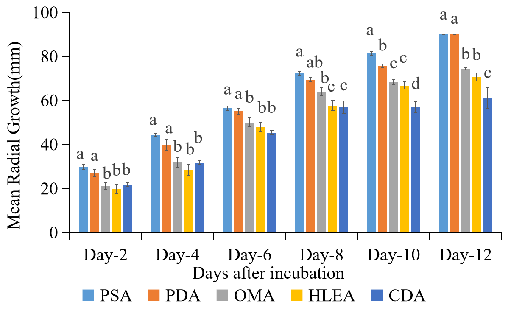
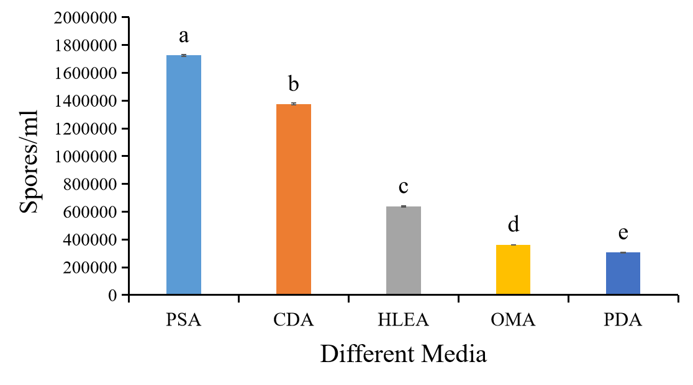

Background
Alternaria brassicicola is a major pathogen causing leaf spot in cabbage, reducing yield and quality. While prior studies emphasized management, limited data exist on cultural characterization. Understanding growth, sporulation, and colony morphology across different media is essential for lab propagation and further research.
Objective
To evaluate the growth, sporulation, and colony characteristics of Alternaria brassicicola on various culture media to identify the most suitable medium for laboratory studies.
Materials & Methods
The isolate from Sundarbazar was cultured on Potato Dextrose Agar (PDA), Oat Meal Agar (OMA), Carrot Dextrose Agar (CDA), Potato Sucrose Agar (PSA), and Host Leaf Extract Agar (HLEA). Cultures were incubated at 25±2°C for 12 days. Observations included radial growth (mm), sporulation (spores/ml), colony color, pigmentation, margin, texture, elevation, and zonation.
Results

Dorsal view of radial expansion at 12 DAI

Radial growth of pathogen at different days of incubation (mean followed by same letter are statistically similar to each other)

Among 5 different treatments highest sporulation was observed in PSA (1.725×106 spore/ml) followed by CDA (1.37×106 spores/ml) and least in PDA (3.05 ×105 spores/ml).
Gallery